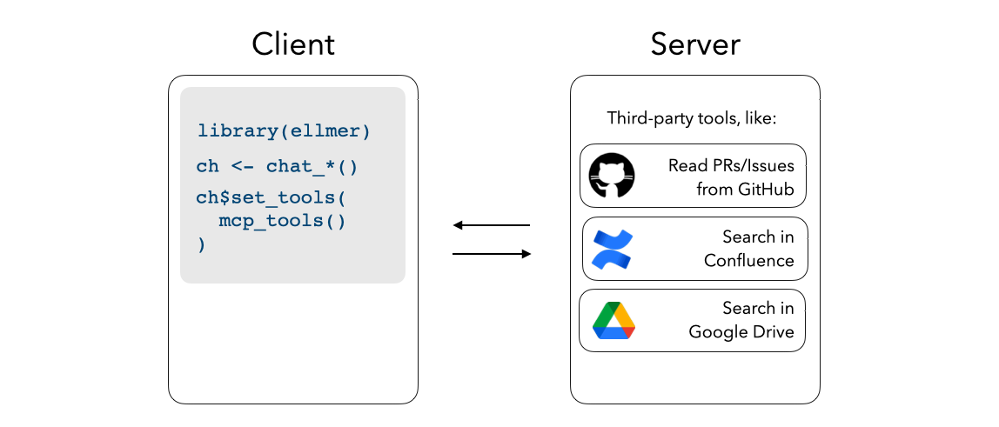

mcptools implements the Model Context Protocol in R. There are two sides to mcptools:
R as an MCP server:
![A system architecture diagram showing three main components: Client (left), Server (center), and Session (right). The Client box lists AI coding assistants including Claude Desktop, Claude Code, Copilot Chat in VS Code, and Positron Assistant. The Server is initiated with `mcp_server()` and contains tools for R functions like reading package documentation, running R code, and inspecting global environment objects. Sessions can be configured with `mcp_session()` and can optionally connect to interactive R sessions, with two example projects shown: 'Some R Project' and 'Other R Project'.](reference/figures/r_as_a_server.png)
When configured with mcptools, MCP-enabled tools like Claude Desktop, Claude Code, and VS Code GitHub Copilot can run R code in the sessions you have running to answer your questions. While the package supports configuring arbitrary R functions, you may be interested in the btw package’s integrated support for mcptools, which provides a default set of tools to to peruse the documentation of packages you have installed, check out the objects in your global environment, and retrieve metadata about your session and platform.
R as an MCP client:

Register third-party MCP servers with ellmer chats to integrate additional context into e.g. shinychat and querychat apps.
NOTE:
This package used to be called acquaint and supplied a default set of tools from btw when R was used as an MCP server. The direction of the dependency has been reversed; to use the same functionality from before, transition
acquaint::mcp_server()tobtw::btw_mcp_server()andacquaint::mcp_session()tobtw::btw_mcp_session().
Installation
Install mcptools from CRAN with:
install.packages("mcptools")You can install the development version of mcptools like so:
pak::pak("posit-dev/mcptools")R as an MCP server
mcptools can be hooked up to any application that supports MCP. For example, to use with Claude Desktop, you might paste the following in your Claude Desktop configuration (on macOS, at ~/Library/Application Support/Claude/claude_desktop_config.json):
{
"mcpServers": {
"r-mcptools": {
"command": "Rscript",
"args": ["-e", "mcptools::mcp_server()"]
}
}
}Or, to use with Claude Code, you might type in a terminal:
Then, if you’d like models to access variables in specific R sessions, call mcptools::mcp_session() in those sessions. (You might include a call to this function in your .Rprofile, perhaps using usethis::edit_r_profile(), to automatically register every session you start up.)
R as an MCP client
mcptools uses the Claude Desktop configuration file format to register third-party MCP servers, as most MCP servers provide setup instructions for Claude Desktop in their documentation. For example, here’s what the official GitHub MCP server configuration would look like:
{
"mcpServers": {
"github": {
"command": "docker",
"args": [
"run",
"-i",
"--rm",
"-e",
"GITHUB_PERSONAL_ACCESS_TOKEN",
"ghcr.io/github/github-mcp-server"
],
"env": {
"GITHUB_PERSONAL_ACCESS_TOKEN": "<YOUR_TOKEN>"
}
}
}
}Once the configuration file has been created (by default, mcptools will look to file.path("~", ".config", "mcptools", "config.json")), mcp_tools() will return a list of ellmer tools which you can pass directly to the $set_tools() method from ellmer:
Example
In Claude Desktop, I’ll write the following:
“From what year is the earliest recorded sample in the
foresteddata in my Positron session?”
Without mcptools, Claude couldn’t get far here; by default, it can’t run R code and doesn’t have any way to “speak to” my interactive R sessions.
Using the package, the model asks to describe the data frame using a structure that will show summary statistics from the data. mcptools will appropriately route the request to the open Positron session, forwarding the results back to the model for it to situate in a response.